철도신호기사 (2017-09-23 기출문제)
1과목: 전자공학
1. 변조 신호를 적분한 다음 위상 변조하여 얻을 수 있는 변조파는?
- PM(Phase Modulation) 변조파
- FM(Frequency Modulation) 변조파
- PAM(Pulse Amplitude Modulation) 변조파
- PTM(Pulse Time Modulation) 변조파
(정답률: 50%)

2. 그림과 같은 회로의 명칭은?
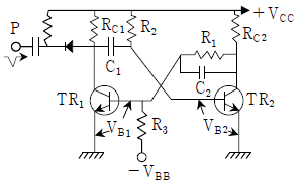
- 단안정 멀티바이브레이터
- 미분기
- 클리퍼
- 감산기
(정답률: 66%)
3. 다음 중 병렬 저항 이상형 RC 발진회로의 발진주파수(fo)를 나타낸 것은?
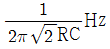
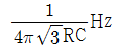
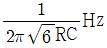
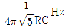
(정답률: 71%)
4. 트랜지스터를 나타내는 기호에서 화살표가 의미하는 것은?
- 이미터 영역에서 전자의 이동방향
- 이미터 영역에서 정공의 이동방향
- 이미터 영역에서 소수캐리어의 순방향
- 이미터 영역에서 다수캐리어의 역방향
(정답률: 50%)
5. 공통 컬렉터 증폭회로에 대한 설명으로 옳은 것은?
- 전압이득은 1보다 작고 전류이득은 대단히 크다.
- 전압이득은 대단히 크고 전류이득은 1보다 작다.
- 전압이득과 전류이득 모두 1보다 크다.
- 내부저항이 작은 신호원 정합이나 아주 높은 임피던스 부하를 구동할 때 사용한다.
(정답률: 63%)
6. JK플립플롭의 JK입력을 묶어서 하나의 입력신호를 이용하는 플립플롭은?
- D플립플롭
- J플립플롭
- K플립플롭
- T플립플롭
(정답률: 56%)
7. 접합형 전계효과 트랜지스터의 핀치 오프(pinch off) 상태에 관한 설명 중 틀린 것은?
- 채널의 폭이 최소가 되면서 차단상태가 된다.
- 항복현상이 나타나는 전압이 된다.
- 드레인 전류가 차단된다.
- 채널의 저항이 최대가 된다.
(정답률: 61%)
8. 다음 중 2진 코드를 십진수로 변환하는 논리장치는 어느 것인가?
- 디코더
- 인코더
- 멀티플렉서
- 레지스터
(정답률: 64%)
9. 전류 출력전압이 무부하일 때 240V, 전부하일 때 215V 이면 정류기의 전압 변동률은?
- 10.4 %
- 11.6 %
- 12.8 %
- 14 %
(정답률: 62%)
10. 다음 중 정현파 발진회로가 아닌 것은?
- 콜피츠형 발진회로
- 하틀리형 발진회로
- 비안정 멀티바이브레이터
- 이상 발진회로
(정답률: 61%)
11. 4bit 레더 저항망의 입력이 그림과 같을 때 출력 전압(VA)은 몇 V 인가?(오류 신고가 접수된 문제입니다. 반드시 정답과 해설을 확인하시기 바랍니다.)
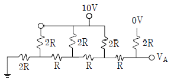
- 6.5
- 7.2
- 8.6
- 9.3
(정답률: 39%)
12. 이미터 접지 증폭기에서 β = 50, ICO = 0.1 mA, IB = 0.2 mA 일 때 컬렉터 전류는?
- 10.6 mA
- 13.2 mA
- 15.1 mA
- 18.2 mA
(정답률: 54%)
13. 그림과 같은 ECL회로의 논리출력 Y′는?
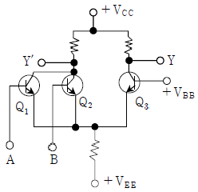
- AND
- NAND
- OR
- NOR
(정답률: 50%)
14. 디지털 변조방식에 해당되는 것은?
- AM
- PM
- FM
- PSK
(정답률: 60%)
15. 그림의 회로에서 출력전압(Vo)과 입력전압(Vs) 과의 관계는?
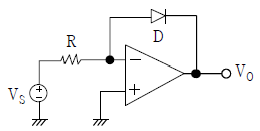
- Vo는 Vs의 R배로 증폭된다.
- Vo는 Vs의 지수로 나타난다.
- Vo는 Vs의 자연대수에 비례한다.
- Vo는 Vs의 역수에 비례한다.
(정답률: 59%)
16. 반도체의 특성과 관계가 없는 것은?
- 피에조(piezo) 효과
- 홀(Hall) 효과
- 제벡(Seebeck) 효과
- 펠티에(Peltier) 효과
(정답률: 69%)
17. 부귀환 증폭기에서 귀환이 없는 경우 전압이득이 20, β = 0.2 이다. 이 증폭기에 귀환이 있을 경우의 전압이득은 얼마인가?
- 6 dB
- 24 dB
- 12 dB
- 48 dB
(정답률: 44%)
18. 다음 논리회로 중 팬 아웃(fan-out) 수가 가장 많은 회로는?
- CMOS
- TTL
- RTL
- DTL
(정답률: 66%)
19. 차동증폭기의 베이스 저항을 통하여 흐르는 베이스 전류 IB1과 IB2에서 입력 오프셋 전류는?
- IB1
- IB2
- IB1 + IB2
- IB1 - IB2
(정답률: 60%)
20. 다음 그림과 같은 PUT(Programable Uni-Junction Transistor) 소자를 사용한 이상 펄스 발진 회로가 있다. 이 회로에서 진성 스탠드 오프비(stand off ratio) 를 결정하는 소자는 어떤 것인가?
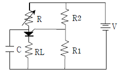
- C
- RL
- R1, R2
- R
(정답률: 63%)
2과목: 회로이론 및 제어공학
21. RC직렬회로 직류전압 V(V)가 인가될 때, 전류 i(t)에 대한 시간영역 방정식이
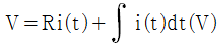
로 주어져 있다. 전류 i(t)의 라플라스 변환 I(s)는? (단, C에는 초기전하가 없음)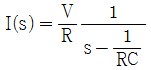
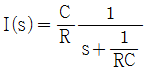
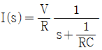
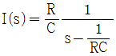
(정답률: 56%)
22. 분포정수 회로가 무왜선로로 되는 조건은? (단, 선로의 단위 길이당 저항은 R, 인덕턴스는 L, 정전용량은 C, 누설 컨덕턴스는 G 이다.)
- RL = CG
- RC = LG
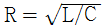
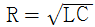
(정답률: 63%)
23. 회로에서 정전용량 C는 초기전하가 없었다. t=0에서 스위치(K)를 닫았을 때 t=0에서의 i(t)값은?
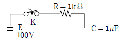
- 0.1A
- 0.2A
- 0.4A
- 1.0A
(정답률: 64%)
24. 라플라스 변환함수
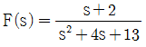
에 대한 역변환 함수 f(t)는?- e-3tcos2t
- e3tcos2t
- e-2tcos3t
- e2tcos3t
(정답률: 52%)
25. 다음의 비정현파 전압, 전류로부터 평균전력 P(W)와 피상전력 Pa(VA)는?
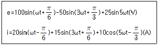
- P = 283.5, Pa = 1541
- P = 385.2, Pa = 2021
- P = 404.9, Pa = 3284
- P = 491.3, Pa = 4141
(정답률: 29%)
26. 그림과 같은 4단자 회로의 영상 임피던스 Z02는 몇 Ω인가?
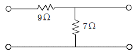
- 14
- 12
- 21/4
- 5/3
(정답률: 48%)
27. 불평형 3상전류 Ia=25+j4(A), Ib=-18-j16(A), Ic=7+j15(A) 일 때의 영상전류 Ia(A)는?
- 2.67 + j
- 2.67 + j2
- 4.67 + j
- 4.67 + j2
(정답률: 65%)
28. 6상 성형 상전압이 100V 일 때 선간전압은 몇 V 인가?
- 200
- 178
- 141
- 100
(정답률: 53%)
29. R=10Ω, C=50μF 의 직렬회로에 200V 의 직류를 가할 때 완충된 전기량 Q(C)는?
- 10
- 0.1
- 0.01
- 0.001
(정답률: 47%)
30. 코일에 최댓값이 Em = 200V, 주파수 f = 50Hz 인 정현파 전압을 가했더니 전류의 최대값 Im = 10A 이었다. 인덕턴스 L은 약 몇 mH인가? (단, 코일의 내부저항은 5Ω이다.)
- 62
- 52
- 42
- 32
(정답률: 54%)
31. 미분방정식
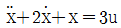
로 표시되는 계의 시스템행렬과 입력행렬은?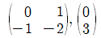
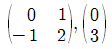
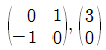
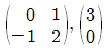
(정답률: 48%)
32. 다음 블록선도의 전달함수
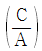
는?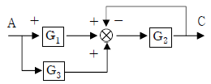
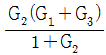
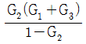
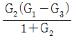
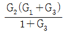
(정답률: 56%)
33. 2차 계의 주파수 응답과 시간 응답에 대한 특성을 서술하는 내용 중 틀린 것은?
- 안정된 영역에서 대역폭은 공진주파수에 반비례한다.
- 안정된 영역에서 더 높은 대역폭은 더 큰 공진 첨두값에 대응한다.
- 최대 오버슈트와 공진 첨두값은 제동비만의 함수로 나타낼 수 있다.
- 공진주파수가 일정 시 제동비가 증가하면 상승시간은 증가하고, 대역폭은 감소한다.
(정답률: 16%)
34. 근궤적은 무엇에 대하여 대칭인가?
- 극점
- 원점
- 허수축
- 실수축
(정답률: 35%)
35. 그림과 같은 계전기 접점회로의 논리식은?
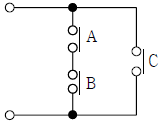
- ABC
- AB + C
- A + B + C
- (A + B)C
(정답률: 50%)
36. 샘플러의 주기를 T라 할 때 s평면상의 모든 점은 z = esT에 의하여 z평면상에 사상된다. s평면의 우반 평면상의 모든 점은 z평면상 단위원의 어느 부분으로 사상되는가?
- 내점
- 외점
- z평면 전체
- 원주상의 점
(정답률: 52%)
37. 특성방정식 s4+7s3+17s2+17s+6=0 의 특성근 중에는 양의 실수부를 갖는 근이 몇 개인가?
- 1
- 2
- 3
- 무근
(정답률: 41%)
38. 보드선도의 안정판정의 설명 중 옳은 것은?
- 위상곡선이 180°점에서 이득 값이 양이다.
- 이득여유는 음의 값, 위상여유는 양의 값이다.
- 이득곡선의 0dB 점에서 위상차가 180°보다 크다
- 이득(0dB)축과 위상(-180°)축을 일치시킬 때 위상 곡선이 위에 있다.
(정답률: 46%)
39. 단위피드백(feed back)제어계의 개루프 전달함수의 벡터궤적이다. 이 중 안정한 궤적은?
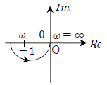
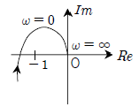
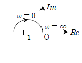
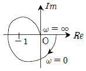
(정답률: 32%)
40. PD제어동작은 프로세스 제어계의 과도 특성 개선에 쓰인다. 이것에 대응하는 보상 요소는?
- 지상 보상 요소
- 진상 보상 요소
- 동상 보상 요소
- 진지상 보상 요소
(정답률: 59%)
3과목: 신호기기
41. 사이리스터의 명칭에 관한 설명 중 틀린 것은?
- SCR은 역저지 3극 사이리스터이다.
- SSS는 2극 쌍방향 사이리스터이다.
- SCS는 역저지 2극 사이리스터이다.
- TRIAC은 3극 쌍방향 사이리스터이다.
(정답률: 46%)
42. 신호현시가 열차 또는 차량에 의해 자동적으로 제어되는 것으로 신호 취급자도 조작할 수 있는 신호기는?
- 자동 신호기
- 수동 신호기
- 반자동 신호기
- 자동원격 신호기
(정답률: 59%)
43. 철도건널목에 사용하는 전동차단기의 전동기의 클러치 조정은 차단봉 교체 시 시행하여야 하며 전동기 슬립 전류는 몇 A 이하인가?
- 10
- 8
- 7
- 5
(정답률: 63%)
44. 2중 농형 유도전동기가 보통 농형 유도전동기와 다른 점은?
- 기동 전류가 크고 기동 토크도 크다.
- 기동 전류가 적고 기동 토크도 적다.
- 기동 전류가 크고 기동 토크가 적다.
- 기동 전류가 적고 기동 토크는 크다.
(정답률: 56%)
45. 변압기의 전일 효율을 좋게 하려고 할 때 철손(Pi)과 전부하동손(Pc)과의 관계는?
- 무관
- Pi ＜ Pc
- Pi ＞ Pc
- Pi = Pc
(정답률: 32%)
46. 건널목 경보기의 경보종 타종수의 범위는 기당 어떻게 되는가?
- 매분 50 ~ 80회
- 매분 60 ~ 90회
- 매분 70 ~ 100회
- 매분 80 ~ 120회
(정답률: 66%)
47. 전기자 철심을 규소강판으로 성층하는 이유는?
- 철손을 적게 할 수 있다.
- 가공을 쉽게 할 수 있다.
- 기계적 강도가 좋아진다.
- 기계손을 적게 할 수 있다.
(정답률: 62%)
48. 직류전동기의 기계손과 가장 관계가 깊은 것은?
- 전압
- 전류
- 자속
- 회전수
(정답률: 63%)
49. 전부하에 있어 철손과 동손의 비율이 1 : 4인 변압기의 효율이 최대인 부하는 전부하의 대략 몇 % 인가?
- 50
- 60
- 70
- 80
(정답률: 64%)
50. 권수비 60인 단상변압기의 전부하 2차 전압 200V, 전압변동률 3%일 때 1차 단자전압(V) 은?
- 12000
- 12180
- 12360
- 12720
(정답률: 72%)
51. 다음 계전기 기호의 명칭은?
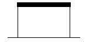
- 거치형 완동계전기
- 거치형 완방계전기
- 삽입형 완방계전기
- 삽입형 자기유지계전기
(정답률: 41%)
52. NS형 선로전환기 밀착은 기본레일이 움직이지 않는 상태에서 1mm를 넓히는데 정위, 반위를 균등하게 몇 kg을 기준으로 하는가?
- 50
- 100
- 120
- 150
(정답률: 67%)
53. 전기 선로전환기에 사용하는 전동기의 슬립전류는 동작전류의 몇 배 이하가 되지 않도록 하여야 하는가?
- 1.1
- 1.2
- 1.3
- 1.4
(정답률: 62%)
54. 주로 저압 전로에 사용하는 과전류 차단기로 개폐 기구와 차단 장치를 몰드 케이스 내에 내장하여 전로를 수동 또는 외부 조작 기구에 의하여 개폐할 수 있는 동시에 과부하, 단락 시 자동으로 전로를 차단하는 보호기기는?
- 기중차단기
- 진공차단기
- 가스차단기
- 배선용차단기
(정답률: 55%)
55. 3현시 폐색구간에서 열차속도 100km/h, 제동거리 800m, 제동여유거리 100m, 열차길이 200m, 신호현시 확인 최소거리 30m, 선행열차가 1의 신호기를 통과할 때부터 3의 신호기가 진행신호를 현시할 때까지의 시간이 60초일 때 최소운전시격은 약 얼마인가?
- 63 sec
- 83 sec
- 133 sec
- 150 sec
(정답률: 59%)
56. 60Hz인 3상 8극 및 2극의 유도전동기를 차동종속으로 접속하여 운전할 때의 무부하 속도(rpm)는?
- 720
- 900
- 1200
- 3600
(정답률: 62%)
57. 건널목고장감시장치의 송신카드에 대한 특성 중 송신전압레벨은 선로저항 600Ω에서 몇 mV 이상이어야 하는가?
- 100
- 200
- 300
- 400
(정답률: 32%)
58. 용량 100kVA의 단상 변압기가 역률 85%에서 전부하 효율이 95%라면 역률 0.5의 전부하에서의 효율은 약 몇 % 인가?
- 90
- 92
- 96
- 99
(정답률: 55%)
59. 다음 중 전기 선로전환기의 공회전 조건이 아닌 것은?
- 콘덴서가 단락되었을 때
- 첨단에 다른 물질이 끼었을 때
- 쇄정간 홈과 쇄정자가 불일치 되었을 때
- 선로전환기와 첨단간의 취부위치가 틀릴 때
(정답률: 59%)
60. 어떤 정류회로의 부하전압이 200V이고, 맥동률이 4%일 때 교류분은 몇 V 포함되어 있는가?
- 4
- 8
- 12
- 18
(정답률: 52%)
4과목: 신호공학
61. 경부고속철도 UM71 궤도회로 구성 기기 중 송신기와 수신기 케이블의 길이가 동일하게 구성되도록 전류를 감쇄시키기 위하여 사용되는 것은?
- 방향계전기
- 거리조정기
- 동조유니트
- 정합변성기
(정답률: 70%)
62. 고속철도 지장물검지장치에 대한 설명으로 틀린 것은?
- 검지선은 절연 바인드선을 이용하여 각 절연애자에 부착한다.
- 고속철도를 횡단하는 과선교나 낙석, 토사붕괴가 우려되는 개소에 설치하여 낙석 등이 고속철도로 침입하는 것을 검지한다.
- 낙석 검지용 보조 접속함(SDC)은 검지망의 시점 기주에 설치한다.
- 검지선 간의 간격은 400 ~ 600mm로 한다.
(정답률: 67%)
63. ATP(Automatic Train Protection)의 기능과 가장 거리가 먼 것은?
- 과속도 방어
- 열차 출입문 제어
- 열차 상호간 거리 유지
- 궤도 및 열차 감시
(정답률: 78%)
64. 단선구간의 선로용량에 관한 표현식으로 옳은 것은? (단, N은 역 사이의 선로용량, T는 역 사이의 평균열차운행시간[분], C는 폐색취급시간[분], f는 선로 이용률 이다.)
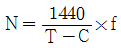
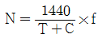
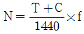
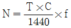
(정답률: 80%)
65. 다음 중 궤도회로의 불평형률은? ( UB : 불평형률[%], I1, I2 : 각 레일의 전류)
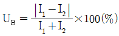
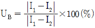
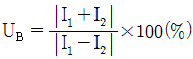
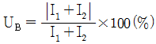
(정답률: 79%)
66. 고속선의 운전취급실에서 취급된 제어명령의 연동 논리를 처리하는 장치는?
- 역정보전송장치(FEPOL)
- 연동처리장치(SSI)
- 선로변 기능모듈(TFM)
- 컴퓨터 지원 유지보수 시스템(CAMS)
(정답률: 78%)
67. 신호기 외방접근 궤도에 열차의 점유 유ㆍ무에 관계없이 신호기 정지신호를 현시한 후 상당시분이 경과할 때까지 진로내 선로전환기 등을 전환할 수 없도록 하는 것은?
- 철사쇄정
- 진로쇄정
- 보류쇄정
- 진로구분쇄정
(정답률: 62%)
68. 신호용 계전기 중 여자 전류가 흐르고서부터 N접점이 닫힐(접촉함)때까지 다소간 시소를 갖는 계전기는?
- 완동계전기
- 완방계전기
- 자기유지계전기
- 선조계전기
(정답률: 69%)
69. 고속철도 표지에 대한 설명으로 거리가 먼 것은?
- 신호표지 또는 입환신호 표지에는 표지 번호표를 설치
- 절대표지와 고속선입환표지에는 진입허용표시등을 첨장
- 폐색경계표지의 절대표지와 허용표지의 황색삼각형이 선로의 폐색경계지점을 표시
- 거리예고표지는 곡선 등으로 확인거리가 짧은 신호기 또는 표지 앞에 약 500m 간격으로 1개 이상 설치
(정답률: 74%)
70. 궤도회로에서 구간내의 열차 유무만을 조사하는 기능을 가진 것을 무엇이라 하는가?
- 2위식 궤도회로
- 3위식 궤도회로
- 2위식 계전기
- 3위식 계전기
(정답률: 77%)
71. ATS 지상자 경보지점 계산식으로 옳은 것은? (단, V : 폐색구간 운행속도의 최댓값[km/h], l : 신호기에서 경보지점까지의 거리[m], 열차종별 : 전동차)
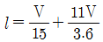
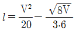
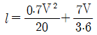
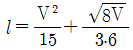
(정답률: 66%)
72. 원방신호기의 확인거리는 몇 m 이상인가?
- 80
- 200
- 350
- 500
(정답률: 74%)
73. 단선구간의 상용폐색방식이 아닌 것은?
- 통표폐색식
- 지정폐색식
- 연동폐색식
- 자동폐색식
(정답률: 58%)
74. ATS의 지상자 설치에 대한 설명으로 틀린 것은?
- 점제어식 지상자의 설치거리는 신호기 바깥쪽으로부터 열차 제동거리의 1.2배 범위로 한다.
- 레일 하부로 지나가는 리드선은 보호관을 설치한다.
- 지상자 밑면과 자갈과의 간격은 50mm이상으로 한다.
- 점제어식에서 레일 상면으로부터 지상자 상면까지의 높이는 10~30mm 범위로 한다.
(정답률: 53%)
75. NS-AM형 전기선로전환기에 대한 설명으로 옳은 것은?
- 전자클러치는 영구 자석을 이용한 접촉 구조이다.
- 전자클러치의 입력측과 출력측 모두 마그네틱 구조이다.
- 일정 전압시 최대 400kg의 일정부하가 가능하다.
- 운전 전류는 2.5A 이하를 사용한다.
(정답률: 62%)
76. 연동도표에 기재할 사항이 아닌 것은?
- 소속선명
- 연동장치종별
- 배선약도
- 운전취급자
(정답률: 81%)
77. 정류기로부터 축전지와 부하를 병렬로 접속하여 그 회로 전압을 축전지의 전압보다 약간 높게 유지시켜 사용하는 충전방식은?
- 부동충전
- 균등충전
- 초충전
- 세류충전
(정답률: 66%)
78. 신호전구 설비수가 100개일 때 연간 장애건수가 50건이라면 고장률은?
- 57 × 10-6
- 137 × 10-6
- 0.5
- 0.2
(정답률: 71%)
79. 경부고속철도에서 사용하는 ATC장치에서 궤도회로에 흐르는 연속정보에 대한 설명으로 틀린 것은?
- 실행속도
- 폐색구배
- 예고속도
- 절대정지구간 제어정보
(정답률: 64%)
80. 경부고속철도에 사용중인 UM71C형 무절연궤도회로장치를 구성하고 있는 기기가 아닌 것은?
- 전압안정기
- 보상용콘덴서
- 동조유니트
- 매칭유니트
(정답률: 57%)